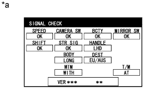
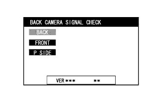
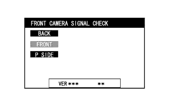
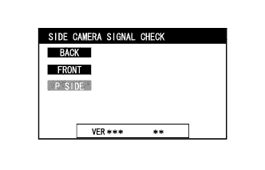
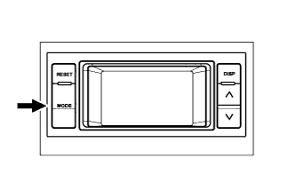
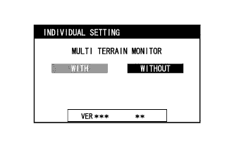
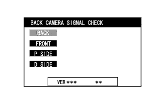
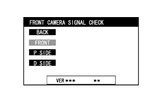
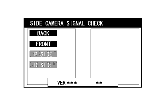

СИСТЕМА МОНИТОРА ЗАДНЕГО ВИДА (для моделей с системой монитора бокового обзора) > КАЛИБРОВКА |
| ОТРЕГУЛИРУЙТЕ СИСТЕМУ ПОМОЩИ ПРИ ПАРКОВКЕ |
Монитор заднего вида можно настроить в окне диагностики вспомогательного индикатора.
Если были произведены перечисленные ниже действия, необходимо выполнить соответствующие регулировки и проверки с использованием экрана диагностики.
| Наименование детали | Действие | Регулируемый параметр | Следующий шаг |
| ЭБУ системы помощи при парковке | Замена | Инициализация ЭБУ системы помощи при парковке | Проверка сигналов |
| Задняя телекамера в сборе |
| Настройка положения задней телекамеры | Настройка телекамеры (для моделей без монитора типа местности) Настройка телекамеры (для моделей с монитором типа местности) |
| ПРОВЕРКА СИГНАЛОВ |
Войдите в режим диагностики.
Включите экран вспомогательного индикатора.
Нажмите переключатель отвода, чтобы переместите зеркала в убранное положение.
Выполните манипуляции с переключателем освещения:
выкл. → вкл. → выкл. → вкл. → выкл. → вкл. → выкл.
|  |
Отображается экран "SIGNAL CHECK" (проверка сигналов).
| *a | Пример |
| НАСТРОЙКА ТЕЛЕКАМЕРЫ (для моделей без монитора типа местности) |
|  |
ПРОВЕРКА СИГНАЛА ТЕЛЕКАМЕРЫ ЗАДНЕГО ВИДА
Нажмите выключатель широкоугольного монитора переднего вида и бокового обзора в составе переключателей на рулевом колесе.
|  |
ПРОВЕРКА СИГНАЛА ТЕЛЕКАМЕРЫ ПЕРЕДНЕГО ВИДА
Нажмите выключатель широкоугольного монитора переднего вида и бокового обзора в составе переключателей на рулевом колесе.
|  |
ПРОВЕРКА СИГНАЛА БОКОВОЙ ТЕЛЕКАМЕРЫ
Нажмите выключатель широкоугольного монитора переднего вида и бокового обзора в составе переключателей на рулевом колесе.
Закончите режим диагностики.
Метод 1
|  |
Метод 2
Метод 2
| НАСТРОЙКА ТЕЛЕКАМЕРЫ (для моделей с монитором типа местности) |
|  |
INDIVIDUAL SETTING (индивидуальная настройка)
Убедитесь в том, что в мониторе типа местности выбран режим "WITH".
Нажмите выключатель широкоугольного монитора переднего вида и бокового обзора в составе переключателей на рулевом колесе, чтобы перейти к следующей проверке сигнала.
|  |
ПРОВЕРКА СИГНАЛА ТЕЛЕКАМЕРЫ ЗАДНЕГО ВИДА
Нажмите выключатель широкоугольного монитора переднего вида и бокового обзора в составе переключателей на рулевом колесе.
|  |
ПРОВЕРКА СИГНАЛА ТЕЛЕКАМЕРЫ ПЕРЕДНЕГО ВИДА
Нажмите выключатель широкоугольного монитора переднего вида и бокового обзора в составе переключателей на рулевом колесе.
|  |
ПРОВЕРКА СИГНАЛА БОКОВОЙ ТЕЛЕКАМЕРЫ
Нажмите выключатель широкоугольного монитора переднего вида и бокового обзора в составе переключателей на рулевом колесе.
Закончите режим диагностики.
Метод 1
Метод 2